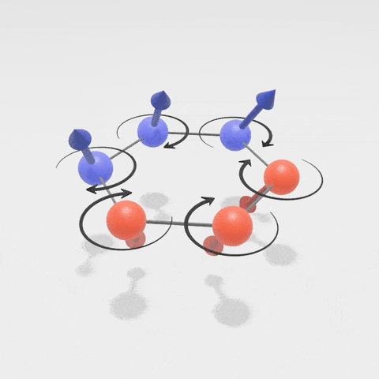
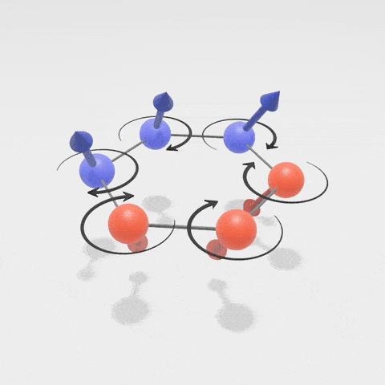

: This page will be updated automatically every eight hours using arXiv API and Github Actions (modified from This Project). I'm trying to list different topics about TQFT separately, a list of keywords will be given later. I also strongly recommend that you check out Delcamp's ArXiv Digest for TQFT, which is another great resource for staying up-to-date with the latest research in this field.
: Automatically collecting arXiv papers in quantum information theory.
最新动态
2025/11/05 | Our paper titled "Weak Hopf tube algebra for domain walls between 2d gapped phases of Turaev-Viro TQFTs" is now published on arXiv: Journal of High Energy Physics. This is a collaborative work with Sheng Tan.
2025/10/30 | My paper titled "Quantum Cluster State Model with Haagerup Fusion Category Symmetry" is now published on Advanced Quantum Technologies.
2025/09/19 | Our paper "Subsystem Symmetry-Protected Topological Phases from Subsystem SymTFT of 2-Foliated Exotic Tensor Gauge Theory" is now published on Journal of High Energy Physics. This is a collaborative work with Qiang Jia.
2025/08/11 | I will be a teaching assistant for "PC5228: Quantum Information and Computation" this semester. The instructor is Dagomir Kaszlikowski. Some useful (but non-official) materials will be posted on this link.
2025/08/06 | Our paper titled "Variational Transformer Ansatz for the Density Operator of Steady States in Dissipative Quantum Many-Body Systems" is now published on Physical Review B. This is a collaborative work with Lu Wei, Yufeng Wang, Dagomir Kaszlikowski, Haibin Ling.
2025/08/04 | My paper titled "Quantum Cluster State Spin Chain with Ising Fusion Category Symmetry: A Perspective from Weak Hopf SymTFT" is now available on arXiv: [arXiv:2508.02424].
2025/07/02 | Our paper titled "Weak Hopf tube algebra for domain walls between 2d gapped phases of Turaev-Viro TQFTs" is now available on arXiv: [arXiv:2507.01515]. This is a collaborative work with Sheng Tan.
2025/06/13 | Our old preprint （2018） is now made published on Entropy： "An efficient algorithmic way to construct Boltzmann machine representations for arbitrary stabilizer code". This is a collaborative work with Yuan-Hang Zhang, Yu-Chun Wu and Guang-Can Guo.
2025/05/28 | Our paper titled "Subsystem Symmetry-Protected Topological Phases from Subsystem SymTFT of 2-Foliated Exotic Tensor Gauge Theory" is now available on arXiv: [arXiv:2505.22261]. This is a collaborative work with Qiang Jia.
2025/02/28 | Our paper titled "Variational Transformer Ansatz for the Density Operator of Steady States in Dissipative Quantum Many-Body Systems" is now available on arXiv: [arXiv:2502.20723]. This is a collaborative work with Lu Wei, Yufeng Wang, Dagomir Kaszlikowski, Haibin Ling.
2024/12/27 | My paper titled "Quantum Cluster State Model with Haagerup Fusion Category Symmetry" is now available on arXiv: [arXiv:2412.19657].
2024/12/19 | My paper titled "Weak Hopf non-invertible symmetry-protected topological spin liquid and lattice realization of (1+1)D symmetry topological field theory" is now available on arXiv: [arXiv:2412.15336].
...
2024/09/27 | Our paper, titled "Shedding Light on the Future: Exploring Quantum Neural Networks through Optics," is now published on Advanced Quantum Technologies. [arXiv: 2409.02533] This is a collaborative work with Shang Yu, Aonan Zhang, Ewan Mer, Zhenghao Li, Valerio Crescimanna, Kuan-Cheng Chen, Raj B. Patel, Ian A. Walmsley, and Dagomir Kaszlikowski.
2024/09/20 | The paper titled "Generalized cluster states from Hopf algebras: non-invertible symmetry and Hopf tensor network representation" is now published on Journal of High Energy Physics, here is the link.
2024/09/06 | The paper titled "Generalized cluster states from Hopf algebras: non-invertible symmetry and Hopf tensor network representation" is now accepted for publication in Journal of High Energy Physics.
2024/09/04 | Our paper titled "Shedding Light on the Future: Exploring Quantum Neural Networks through Optics" is now available on arXiv [arXiv: 2409.02533], collaborative work with Shang Yu, Aonan Zhang, Ewan Mer, Zhenghao Li, Valerio Crescimanna, Kuan-Cheng Chen, Raj B. Patel, Ian A. Walmsley, and Dagomir Kaszlikowski.
2024/08/04 | Our paper titled "The spatiotemporal doubled density operator: a unified framework for analyzing spatial and temporal quantum processes" is now published on Advanced Quantum Technologies, collaborative work with Dagomir Kaszlikowski
2024/08/01 | I will be a teaching assistant for "PC5228: Quantum Information and Computation" this semester. The instructor is Dagomir Kaszlikowski. Some useful materials will be posted on this link.
2024/07/25 | The preprint titled "The spatiotemporal doubled density operator: a unified framework for analyzing spatial and temporal quantum processes" is now accepted for publication on Advanced Quantum Technologies, [arXiv:2305.15649], a collaborative work with Dagomir Kaszlikowski.
2024/07/17 | Our paper titled "Antilinear superoperator, quantum geometric invariance, and antilinear symmetry for higher-dimensional quantum systems" is now accepted for publication on Quantum Information Processing,
collaborative work with Lu Wei, Dagomir Kaszlikowski and Sheng Tan, [arXiv: 2202.10989].
2024/06/18 | The paper titled "Weak Hopf symmetry and tube algebra of the generalized multifusion string-net model" is now accepted for publication on Journal of High Energy Physics,
collaborative work with Dagomir Kaszlikowski and Sheng Tan, [arXiv: 2403.04446].
2024/05/16 | The paper titled "Generalized cluster states from Hopf algebras: non-invertible symmetry and Hopf tensor network representation" is now is now available on arXiv [arXiv:2405.09277].
2024/03/13 | The paper titled "Unification of spatiotemporal quantum formalisms: mapping between process and pseudo-density matrices via multiple-time states" is now published on New journal of physics,a collaborative work with Xiangjing Liu, Yixian Qiu, Fei Li, and Oscar Dahlsten.
2024/03/08 | The paper titled "Weak Hopf symmetry and tube algebra of the generalized multifusion string-net model" is now available on arxiv, collaborative work with Sheng Tan,
Dagomir Kaszlikowski.
 Orcid: 0000-0001-8588-173X
Orcid: 0000-0001-8588-173X
 Inspire HEP: Zhian Jia
Inspire HEP: Zhian Jia


 
